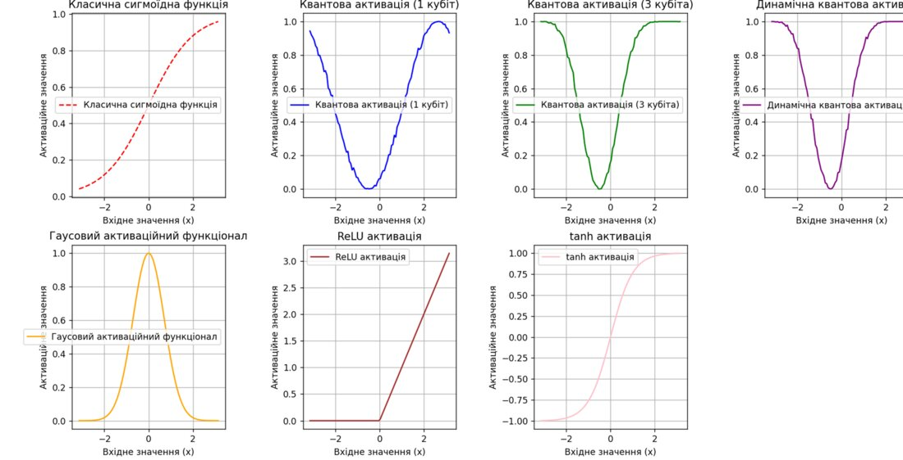
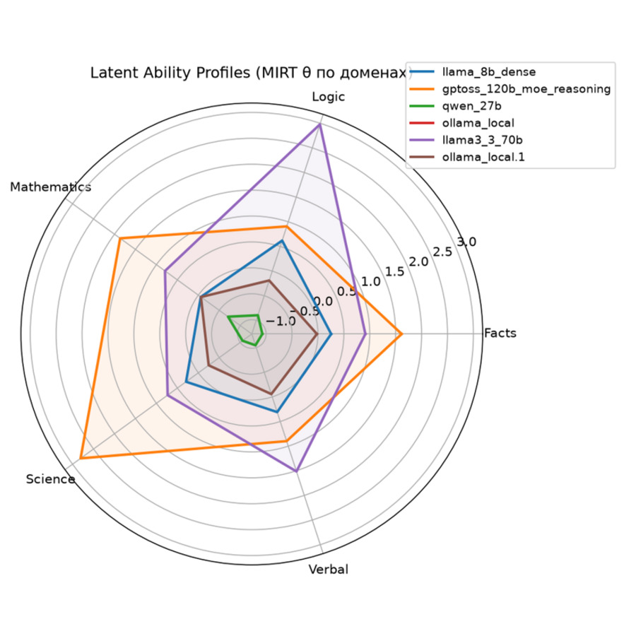

02
Robotics & research
Applied machine learning and autonomous systems, built and tested end to end.

FARIS — Functional Adaptive Robotic Interactive System
Functional Adaptive Robotic Interactive System (FARIS) is an autonomous assistant robot built on Raspberry Pi and ESP32 for voice interaction, computer vision and edge AI.
Raspberry Pi
ESP32
Python
Edge AI
Computer Vision

Hybrid Neural Networks with Quantum and Classical Activations
Implemented on TensorFlow/Keras, exploring how quantum-inspired activation functions affect classical network performance.
TensorFlow
Quantum Computing
Neural Networks
Machine Learning

Beyond Accuracy: Psychometric Evaluation of Large Language Models Using Item Response Theory
Ongoing research applying Item Response Theory (IRT) and psychometric methods to investigate latent ability profiles of large language models.
IRT
LLMs
Psychometrics
AI Evaluation
Technical stack
Python
TensorFlow / Keras
Robotics & microcontrollers
Nmap
Kali Linux
Penetration testing basics